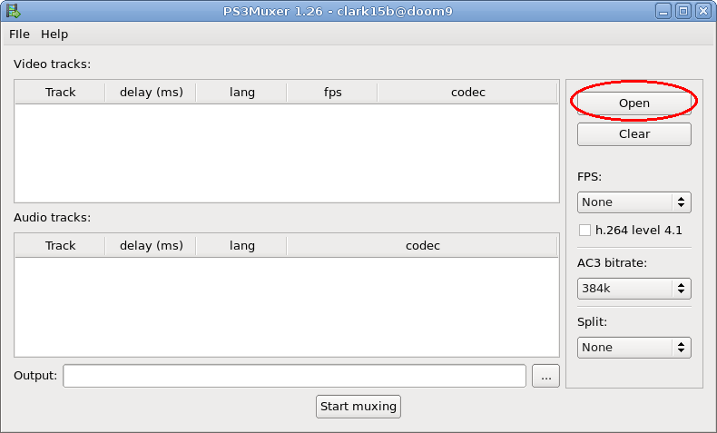
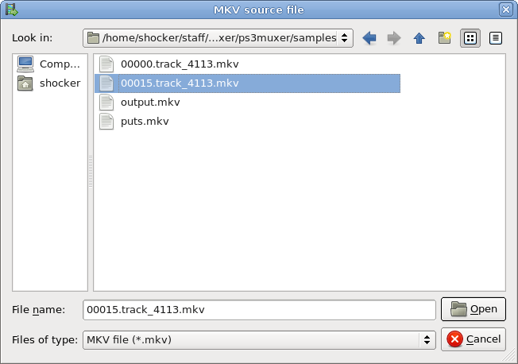
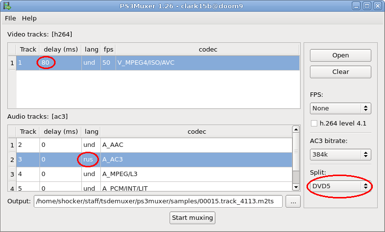
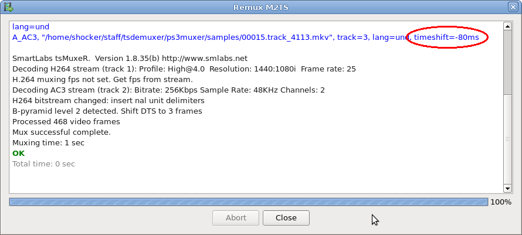

English | Russian
PS3Muxer - конвертер mkv в m2ts для просмотра видео на PlayStation 3 / PlayStation 4 и XBox One
PS3Muxer простая кросплатформенная open source программа для быстрого преобразования (ремукса) MKV файлов (Matroska), содержащих HD видео сжатое кодеком H.264/AVC в поддерживаемый Sony PlayStation 3 и многими телевизорами формат M2TS без потери качества из-за транскодирования (пережатия). Данный процесс по времени соответствует процедуре копирования файла, например, на USB-носитель или NAS и никак не модифицирует видео — только смена контейнера.
При необходимости PS3Muxer использует утилиты tsMuxeR, ffmpeg и mkvextract.
Существуют версии для Microsoft Windows, Mac OS X и Linux.
Для просмотра IPTV на PlayStation 3, PS4 и X1 без применения компьютера используйте
xupnpd (eXtensible UPnP agent).
Новости
- 2011-02-15 Исправление ошибки определения задержек в v1.30
- 2011-02-01 Mac OS X 10.6.4 сборка v1.29
- 2011-01-27 Ремукс в два прохода в случае сжатых mkv в v1.29 (новый mkvtoolnix)
Возможности программы
- Ремукс (преобразование) MKV файлов в совместимый с PlayStation 3 формат M2TS;
- Без долгого, снижающего качество, транскодирования видео;
- Автоматическое транскодирование звуковых дорожек в случае несовместимых с консолью кодеков в AC3 с указанным битрейтом;
- Ремукс в два прохода в случае сжатых MKV (tsMuxeR их не понимает);
- Автоматическое определение и коррекция частоты кадров видео по временным меткам из контейнера;
- Автоматическое определение и коррекция задержек звуковых дорожек относительно видео по временным меткам из контейнера;
- Возможность добавления звуковых дорожек из внешних файлов;
- Пакетная обработка;
- Возможность включения в финальный результат нескольких аудио-дорожек;
- Возможность ручной коррекции языка и задержки аудио-дорожек;
- Возможность разбиения файла на несколько частей;
- Возможность принудительной смены профиля H.264;
- Поддержка Windows, Mac OS X и Linux;
- Открытые исходные тексты.
Как пользоваться?
- Нажать кнопку «Открыть»;
- Выбрать mkv файл;
- В нижнем списке выбрать одну или несколько звуковых дорожек (с зажатой клавишей CTRL);
- При необходимости сменить битрейт транскодирования звука (если кодек отличен от A_AC3) и способ разбиения на части;
- Внизу указать путь к выходному файлу;
- Нажать кнопку «Старт».
После ремукса записать m2ts файл в папку «VIDEO» на USB-носитель с файловой системой FAT32, вставить в PlayStation 3, наслаждаться.
В качестве альтернативы можно положить файл на NAS с функцией UPnP/DLNA медиа-сервера.
Скачать
Для загрузки перейдите по
ссылке.
Общие сведения о медиа возможностях PlayStation 3
Игровая консоль PlayStation 3 является превосходным, стабильным и относительно всеядным мультимедийным проигрывателем с продуманным юзабилити. И для этого вовсе не обязательно вмешиваться в заводскую прошивку устройства.
«Из коробки» консоль справляется почти со всеми современными контейнерами видео-материала: AVI (*.avi), MP4 (*.mp4), WMV (*.wmv), MPEG-TS (*.ts), MPEG2-TS (*.m2ts, *.mts) и MPEG2-PS (*.mpg, *.mpeg, *.vob).
В рамках контейнера AVI консоль допускает наличие видео сжатого в соответствии со стандартом MPEG-4 Part 2 (DivX, Xvid и т.п.) и одной или более аудио-дорожек сжатых кодеками MP3 или AC-3.
В рамках MP4 допустимо SD и HD видео в H.264/AVC и звук в AAC.
Для WMV допустимо видео сжатое только современным VC-1 от Microsoft (как и H.264 применяется для сжатия видео на Blu-Ray дисках).
В случае TS и M2TS возможно видео в H.264 или MPEG2 и звук в AC3 или LPCM.
MPEG2-PS на текущий момент не представляет интереса.
Подробности тут:
http://manuals.playstation.net/document/en/ps3/current/video/filetypes.html
Ограничения и способ доставки видео на PlayStation 3
В случае H.264 кодека поддерживаются профили до High уровня 4.1, в противном случае можно получить черный экран или артефакты. В случае 1080p количество Reframes не должно превышать 5-ти, иначе тоже черный экран. Предварительно проверить данные значения можно на компьютере программой Mediainfo.
PS3 не понимает NTFS на внешних USB-носителях, только FAT32 (кстати файлы надо класть в папку VIDEO). Соответственно появляются ощутимые для HD видео ограничения на максимальный размер файла. Альтернатива USB-носителям — UPnP/DLNA медиа-сервера (например,
xupnpd). В этом случае пропадают ограничения на размер файлов, остается возможность копирования файлов на внутренний диск консоли для последующего воспроизведения но появляется серьезная проблема — транскодирование видео некоторыми серверами на лету, снижающее общее качество картинки, а ведь хочется насладиться HD в полной мере. Да и смысла в этом нет т.к. консоль и так в состоянии показать видео высокой четкости если оно удовлетворяет вышеуказанным требованиям - в этом и поможет PS3Muxer.
Matroska против MPEG2-TS
К сожалению среди перечисленных контейнеров отсутствует наиболее популярный теперь для видео высокой четкости — MKV или Matroska.
Скорее всего причина кроется в том, что данный формат относится к open source, не стандартизирован никакими комитетами, ассоциациями, сообществами и сопровождается он некоммерческой организацией где-то во Франции. Есть только сайт с общим описанием, блог, адрес электронной почты и кнопка для сбора пожертвований. Крупным компаниям может быть слишком рискованно делать вложения в продукты основанные на сомнительных спецификациях, которые к тому же постоянно меняются и расширяются, при том что существуют общепризнанные аналоги в лице MP4 и M2TS. На них и делается ставка.
MP4 является официальным контейнером для видео сжатого кодеком AVC (H.264) и звука в AAC.
M2TS является адаптацией TS под дисковые носители (TS с незапамятных времен применяется в цифровом вещательном или кабельном телевиденье, M2TS в Blu-Ray, AVCHD и т.п.).
Matroska является прямым конкурентом MPEG2-TS т.к. в отличае от других контейнеров тоже может нести в себе видео сжатое кодеками: H.264, VC-1, MPEG2 и звука в LPCM, MPEG, AC-3 (со всеми производными от него), DTS (тоже со всеми производными).
Преимущество Matroska в минимальных накладных расходах на хранение служебной информации. Преимущество MPEG2-TS/MPEG-TS — возможность применения в режиме пакетной передачи видео (вещательное телевидение, вещание в IP и ATM сетях, т.п.).
PlayStation 4 / XBox One и перспективы развития
Консоли следующего поколения PlayStation 4 и XBox One также поддерживают просмотр m2ts файлов.
Руководство в картинках
1) Зупустить программу и нажать кнопку "открыть"

2) Выбрать исходный mkv файл

3) Выбрать звуковую дорожку (используйте "Ctrl" для выбора нескольких).
Далее можно сменить язык, задержку, и способ разделения на части (при необходимости). После этого нажать "Старт"

4) Наслаждаемся

Копирование материалов с данного сайта запрещено без разрешения автора!
License: GPL
Copyright (C) 2011-2024 Антон Бурдынюк
E-Mail: clark15b@gmail.com